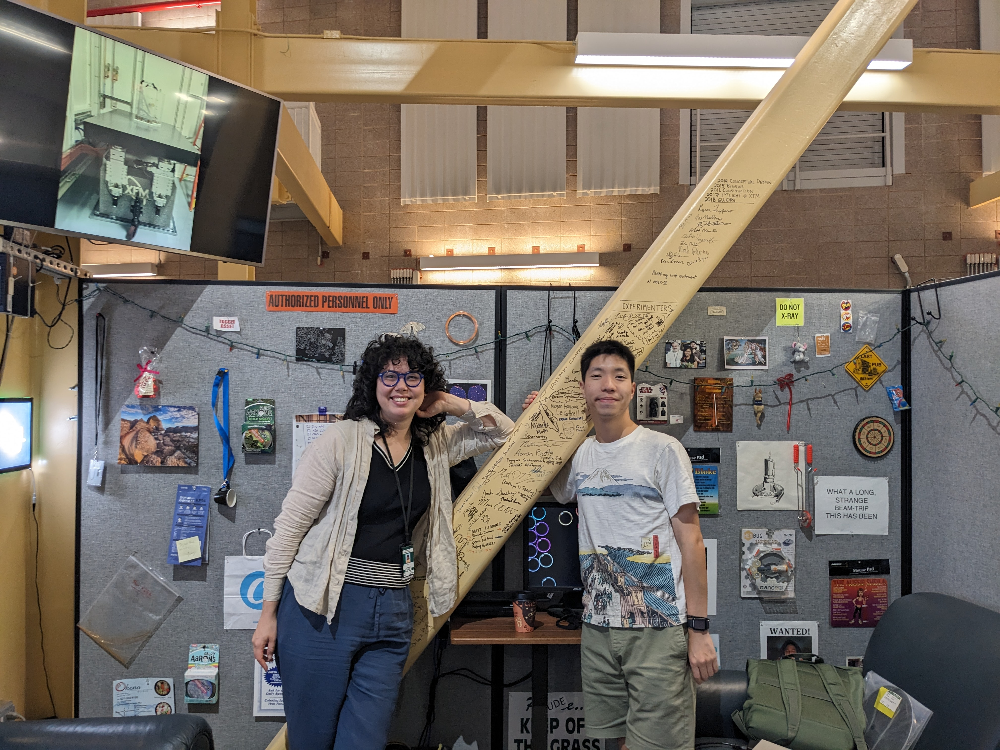

Melt inclusion preparation facilties
We have a binocular picking microscope, a polishing wheel, and a petrographic microscope all in the same room so that we can pick, document, and analyse melt inclusions with a streamlined process. This complements the more general purpose rock and thin section preparation within UW ESS.

FTIR Microscope
Our lab houses a Nicolet RaptIR+ FTIR (Fourier Transform Infrared Spectroscopy) Microscope coupled to a Nicolet iS50 FTIR Spectrometer. This instrument can collect transmission and reflectance spectra using an aperture with size ranging from ~10-100 microns. The microscope has an motorized stage for making maps, and the attached spectrometer can also make measurements on bulk materials. We primarily use this instrument to measure dissolved volatiles in silciate glass.

Raman Microscope
We house a LabRAM Soleil Raman Microscope in the UW Mineral Physics Lab. This instrument can collect Raman spectra for point analyses and maps with a spatial resolution at the micron scale. It is also a confocal instrument, which means we can analyze objects at depth within a polished section. We primarily use this instrument to measure the CO2 content of vapor and fluid inclusions, and characterize phases precipitated inside of these inclusions.

X-Ray Absorption Near Edge Structure Spectroscopy
We travel to Argonne National lab to use beamline 13-ID-E and to Brookhaven National Laboratory to use beamline 4-BM to make measurements of the oxidation states of Fe and S using x-ray absorption near edge structure spectroscopy.
